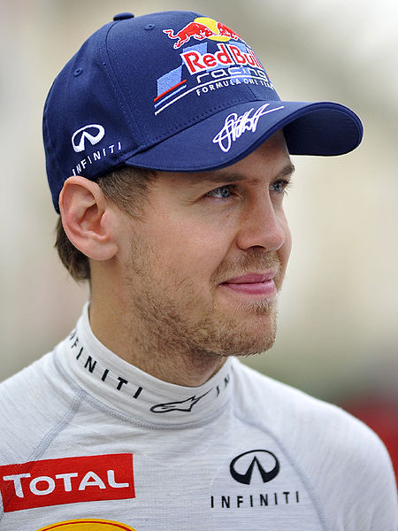

F1
INTRODUCTION

Formula One, also known as Formula 1 or F1 and referred to officially as the FIA Formula One World Championship, is the highest class of single-seater auto racing sanctioned by the Fédération Internationale de l'Automobile (FIA). The "formula", designated in the name, refers to a set of rules with which all participants' cars must comply. The F1 season consists of a series of races, known as Grands Prix (from French, originally meaning great prizes), held throughout the world on purpose-built circuits and public roads. The results of each race are evaluated using a points system to determine two annual World Championships, one for the drivers and one for the constructors. The racing drivers, constructor teams, track officials, organisers, and circuits are required to be holders of valid Super Licences, the highest class of racing licence issued by the FIA.
F1 cars are the fastest multi-turn circuit-racing cars in the world, owing to very high cornering speeds achieved through the generation of large amounts of aerodynamic downforce. Formula One cars race at speeds of up to 350 km/h (220 mph) with engines limited in performance to a maximum of 18,000 revolutions per minute (RPM). The cars are capable of lateral acceleration in excess of five g in corners. The performance of the cars is very dependent on electronics – although traction control and other driving aids have been banned since 2008 – and on aerodynamics, suspension and tyres. The formula has radically evolved and changed through the history of the sport.
While Europe is the sport's traditional base, and hosts about half of each year's races, the sport's scope has expanded significantly during recent years and an increasing number of Grands Prix are held on other continents. F1 had a total global television audience of 527 million people during the course of the 2010 season
Grand Prix racing began in 1906 and became the most popular type internationally in the second half of the twentieth century. The Formula One Group is the legal holder of the commercial rights. With annual spending totalling billions of US dollars, Formula One's economic effect and creation of jobs is significant, and its financial and political battles are widely reported. Its high profile and popularity have created a major merchandising environment, which has resulted in great investments from sponsors and budgets in the hundreds of millions for the constructors. Since 2000 the sport's spiraling expenditures have forced several teams, including manufacturers' works teams, into bankruptcy. Others have been bought out by companies wanting to establish a presence within the sport, which strictly limits the number of participant teams.
2019 F1 SEASON

The 2019 Formula One season is the 64th season of the Formula One World Championship, a motor racing championship for Formula One cars which is recognised by the sport's governing body, the Fédération Internationale de l'Automobile (FIA), as the highest class of competition for open-wheel racing cars. Eleven teams and twenty-two drivers contest the nineteen Grands Prix that make up the calendar for the 2013 season, with the winning driver and team being crowned the World Drivers' and World Constructors' Champions. The season started in Australia on 17 March and is planned to end in Brazil on 24 November.
The 2013 season is the final year the series uses the current 2.4 litre V8 engine configuration which was introduced in 2006; a 1.6 litre turbocharged V6 engine formula is to come into force for 2014.
Sebastian Vettel started the season as the defending World Drivers' Champion, having won his third consecutive title in the final race of 2012.[1] His team, Red Bull Racing are the defending World Constructors' Champions, having secured their third consecutive title at the 2012 United States Grand Prix.
After ten races, Vettel leads the championship by thirty-eight points, ahead of Kimi Räikkönen. Red Bull-Renault lead the constructors' championship by sixty-nine points, ahead of Mercedes.
SOURCE:
BACK